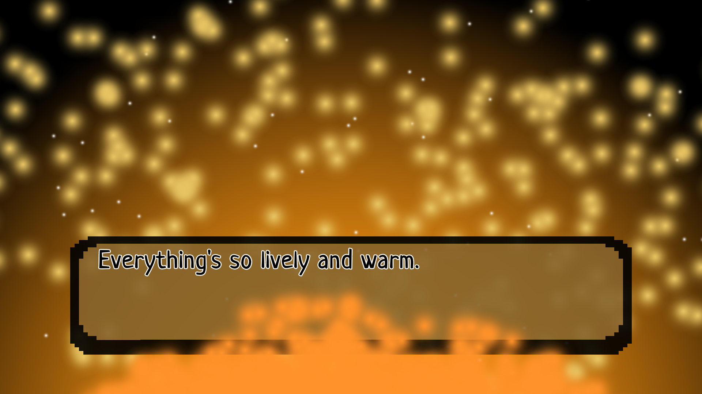
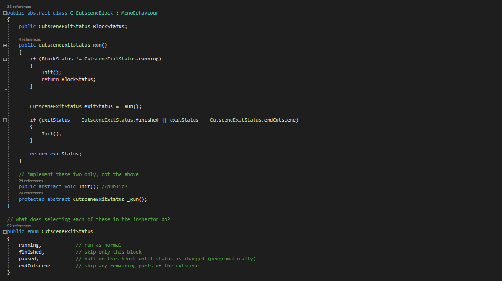
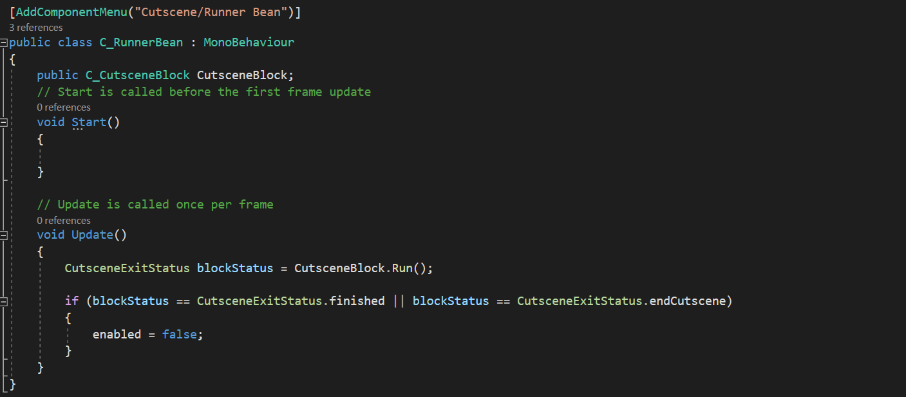
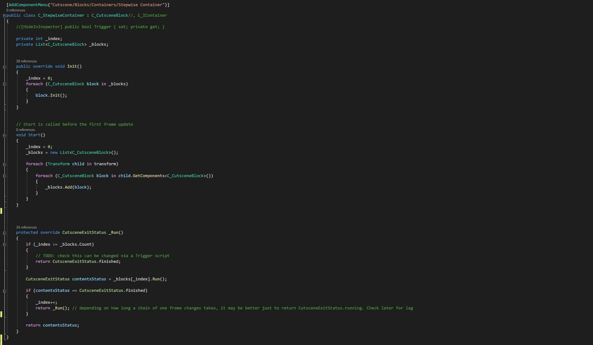
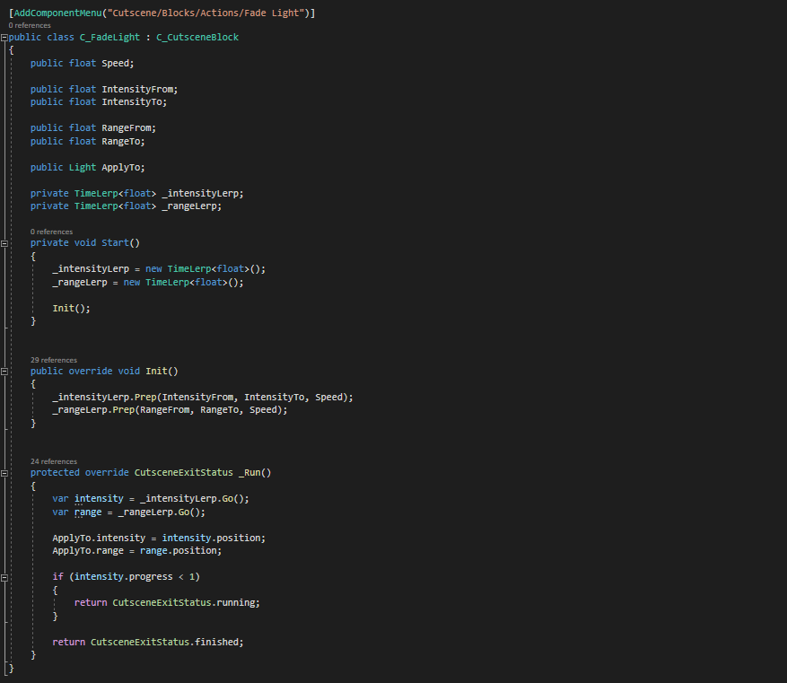
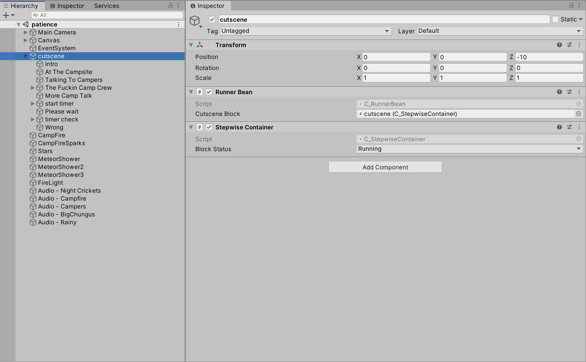
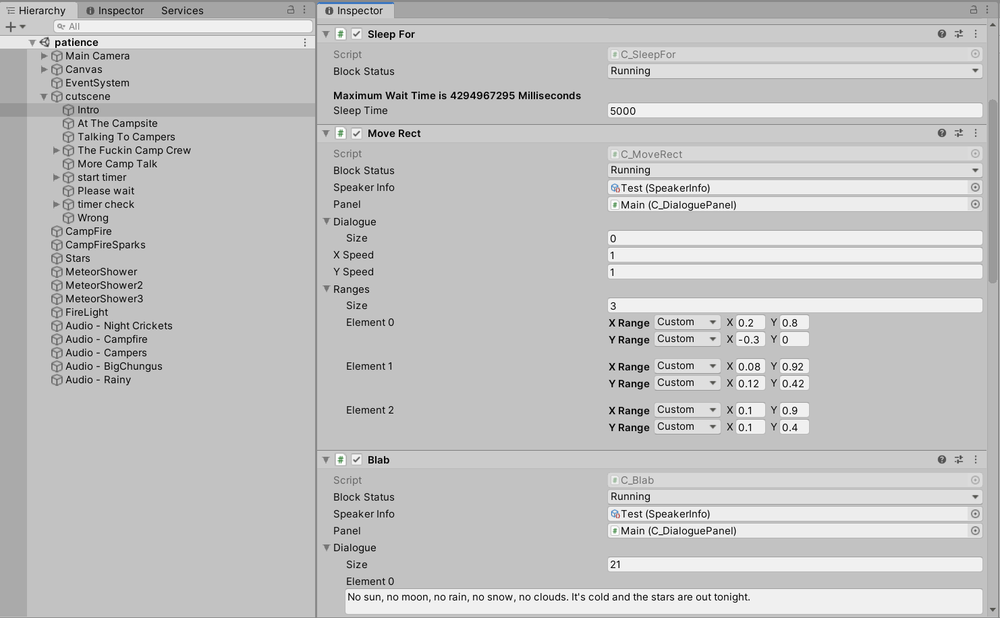
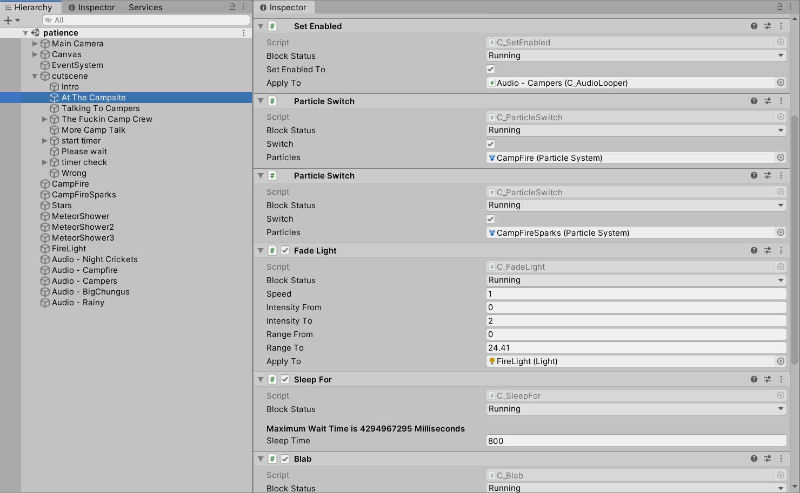

One hundred goodnights, and a thousand too many
This is a game about boundaries.
Unity game
Solo project
Access the code repository here







Cutscene manager
Created second edition of the fully configurable cutscene manager, this version is much more usable.
Created a track in Ableton for the good ending of the game.
Created an idea that would fit well as a test for my cutscene manager.